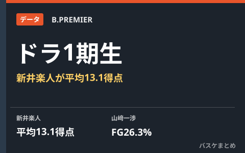

開幕3週間でドラ3・新井楽人が平均13.1得点 Bプレミア"ドラフト1期生"のスタッツまとめ

B.PREMIER開幕から約3週間が経過し、"ドラフト1期生"と呼ばれる新人たちのスタッツに差が出てきました。横浜ビー・コルセアーズのドラフト3位・新井楽人は7試合を終えてチームの日本人選手最多となる平均13.1得点をマークし、10月12日の千葉ジェッツ戦では延長の末33得点を記録。一方、全体1位指名の山﨑一渉（東京サンロッカーズ）は全7試合先発するもフィールドゴール成功率26.3%とシュート精度に課題を抱えており、新人たちの明暗が分かれる開幕3週間となっています。
新井楽人がキャリアハイを更新、ドラ3ながら得点源に
横浜BCの新井楽人は7試合に出場し、チームの日本人選手最多となる平均13.1得点を記録しています。10月4日の信州ブレイブウォリアーズ戦では当時のキャリアハイとなる25得点をマークすると、10月12日の千葉ジェッツ戦では延長の末33得点を挙げて自己最多を更新。ドラフト3位での指名ながら、開幕早々にチームの得点源の一人として存在感を示しています。
| 選手（指名順位・所属） | 主なスタッツ |
|---|---|
| 新井楽人（ドラフト3位・横浜BC） | 7試合 平均13.1得点、自己最多33得点（10.12 千葉J戦） |
| 山﨑一渉（全体1位・東京SR） | 全試合先発、FG成功率26.3%、3P成功率24.3% |
| 岩屋頼（秋田） | 平均18分42秒出場、平均2.5得点1.8アシスト |
| 西部秀馬（京都） | 平均7分28秒出場、平均2.1得点1.1リバウンド1.0アシスト |
全体1位・山﨑一渉はシュート精度に課題も、リバウンド・ディフェンスは評価
全体1位指名の山﨑一渉は東京サンロッカーズで全7試合先発していますが、フィールドゴール成功率26.3%、3ポイント成功率24.3%とシュート面では苦しい数字が続いています。一方で積極的なオフェンスリバウンドやディフェンス面の働きは評価されており、得点以外の部分でチームに貢献している点が報じられています。秋田ノーザンハピネッツの岩屋頼は平均18分42秒の出場時間を得てチームの日本人選手で3番目の出場時間を記録し、平均2.5得点1.8アシスト。京都ハンナリーズの西部秀馬は平均7分28秒の出場で平均2.1得点1.1リバウンド1.0アシストとなっています。
開幕1か月に向けて、新人たちの成長に注目
B.PREMIER初年度のドラフト1期生たちは、得点力で結果を出す選手と、守備やリバウンドといった地道な部分で評価を得る選手とに傾向が分かれつつあります。開幕1か月の節目が近づくなか、各クラブのローテーションにどう組み込まれていくかが今後の見どころです。
Q. 「ドラフト1期生」とは？
A. 新リーグ「B.PREMIER」体制下で初めて実施されたドラフト会議を経て、2026-27シーズンから各クラブに加入した新人選手たちを指す呼び方として報道で使われています。
出典：バスケットボールキング「開幕3週間でドラ3が平均2ケタ得点を記録…Bプレミア"ドラフト1期生"スタッツまとめ」／同「1試合25得点、平均20分超出場も…Bプレミア"ドラフト1期生"開幕4戦目までのスタッツまとめ」ほか
https://basketballking.jp/news/japan/20261014/637644.html
https://basketballking.jp/news/japan/20261005/636220.html